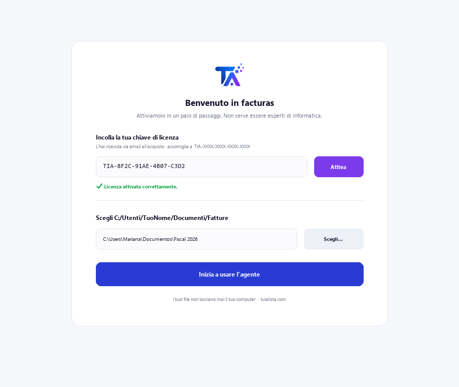
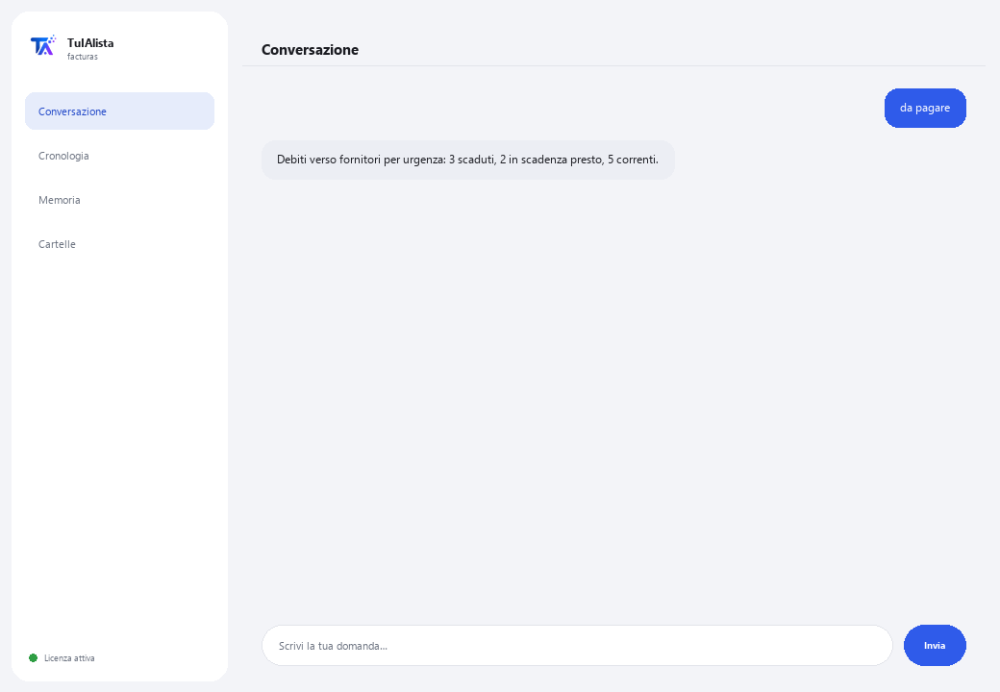

Agente Fatture e Debiti verso fornitori
Digli cosa ti serve con parole tue e ti prepara l'Excel delle fatture, il riepilogo delle imposte e i debiti verso fornitori — senza inserire nulla a mano.
Cosa risolve e cosa ti serve?
Inserire le fatture a mano in Excel richiede ore ed è facile pagare due volte la stessa o perdere una scadenza. Questo agente legge i tuoi XML CFDI e PDF delle fatture, e ti prepara l'Excel di inserimento, il riepilogo delle imposte e i debiti verso fornitori — gli scrivi ciò che ti serve come scriveresti a una persona, non comandi esatti.
- Ti serve: la tua chiave di licenza (TIA-XXXX-XXXX-XXXX-XXXX) e la cartella con le tue fatture (XML CFDI e/o PDF). Niente Python né conoscenze tecniche.
- Primo risultato in meno di 5 minuti: installi, attivi, scegli la tua cartella e scrivi esporta perché ti prepari l'Excel completo.
- Le tue fatture non lasciano mai il tuo computer — l'analisi gira in locale.
soporte@tuialista.com o visita tuialista.com/soporte — di solito rispondiamo lo stesso giorno lavorativo.1 Cosa fa questo agente
Gli indichi la cartella con le tue fatture (XML CFDI del SAT e/o PDF) e lui:
- Inserisce ogni fattura in un Excel ordinato — ciò che normalmente si fa a mano in ore: numero, fornitore, partita IVA, date, subtotale, IVA, ritenuta, totale e valuta.
- Riepiloga le imposte del periodo, sommando quanto dichiara ogni fattura per valuta (base, imposta, ritenuta, totale).
- Prepara i tuoi debiti verso fornitori con avvisi su cosa è scaduto e cosa scade presto.
- Rileva fatture duplicate.
- Risponde a qualsiasi domanda o richiesta sul tuo portafoglio fatture con parole tue — nessun comando da memorizzare.
Il lavoro di inserimento e calcolo segue regole fisse già collaudate, sul tuo computer (non usa IA, non sbaglia per invenzione): legge l'XML CFDI in modo esatto e ogni fattura PDF tramite lettura del testo. Risultato: paghi in tempo, senza duplicati, con il tuo Excel delle fatture pronto senza inserirlo tu.
2 Installazione (2 minuti)
Per Windows. Non serve internet permanente né caricare nulla sul cloud.
Scarica l'installer da tuialista.com/descargar (agente Fatture) e aprilo. Crea un collegamento sul desktop con il logo — non richiede Python né terminale.
Doppio clic sulla nuova icona. Incolla la tua chiave di licenza (ricevuta via email all'acquisto) e premi Attiva. Vedrai un segno di spunta verde quando è valida.
Seleziona la cartella con le tue fatture e premi Inizia a usare l'agente. La prossima volta si avvia direttamente — ricorda la tua chiave e la tua cartella.

3 Come usarlo
L'agente apre una finestra di chat, come un'app di messaggistica — non è uno schermo nero da programmatore. Nessun comando esatto da memorizzare: gli scrivi ciò che ti serve quasi come lo chiederesti a una persona, premi Invia (o Invio), e lui fa il lavoro. Queste sono le 4 cose principali che sa fare, con esempi di come chiederle:

> esporta / genera l'Excel / inseriscileTi prepara un Excel con tutto: inserimento di ogni fattura, riepilogo delle imposte e debiti verso fornitori, pronto da aprire.
> imposte / quanto di IVARiepilogo delle imposte del periodo: base, imposta, ritenuta e totale, sommato per valuta.
> da pagare / cosa scade / quanto devoI tuoi debiti verso fornitori, il più urgente prima: scaduti, in scadenza presto e correnti, con fornitore e importo.
> duplicati / fatture ripetuteRileva fatture che sembrano caricate due volte (stesso numero/UUID, o stesso fornitore e totale).
> qualsiasi altra domandaEs.: “quanto devo ad ACME”, “totale per fornitore”, “confronta questo mese con il precedente” — l'agente capisce la richiesta e prepara la risposta o il report.
Vuoi vedere le 20 ricette complete con un esempio reale per ciascuna? Consulta il Catalogo delle ricette — un documento separato data la sua lunghezza: catalogo_recetas.pdf insieme a questo manuale, o la versione interattiva su tuialista.com/guia/facturas/recetas.
4 Esempi di uso comune
Preparare l'Excel completo del mese
“esporta” — ottieni un Excel con inserimento, imposte e debiti verso fornitori, pronto da rivedere o inviare al tuo commercialista.
Revisione settimanale dei pagamenti
“da pagare” → “duplicati”
Chiusura mensile delle imposte
“imposte del periodo”
Una richiesta puntuale
“quanto devo ad ACME questo mese?”
5 Domande frequenti
Le mie fatture vengono caricate su internet?
Quali formati accetta?
Devo scrivere il comando esatto?
Rileva i duplicati in modo sicuro?
Esegue pagamenti?
In quale lingua risponde?
Legge un PDF scansionato?
Modifica le mie fatture originali?
Posso cambiare la cartella?
Cos'è la “modalità sicura”?
6 Risoluzione dei problemi
Non legge un file
Indica che non ha trovato fatture
Non rileva bene un dato di una fattura
Mostra “Licenza non valida” o chiede di riconnettersi
L'IA non risponde a una domanda libera
Nessuna di queste soluzioni ha risolto il tuo problema? Scrivici direttamente — saremo felici di rivederlo con te.
soporte@tuialista.com o visita tuialista.com/soporte — di solito rispondiamo lo stesso giorno lavorativo.7 Privacy e riservatezza
Le tue fatture non lasciano mai il tuo computer.
- L'agente legge ed elabora le fatture in locale, sul tuo stesso dispositivo. Non le carica su nessun server.
- L'inserimento in Excel, il riepilogo delle imposte, i debiti verso fornitori e i duplicati vengono calcolati sul tuo dispositivo, con regole fisse già collaudate (senza IA).
- L'unica cosa che viaggia su internet è: (1) una verifica che la tua licenza sia attiva — che non include le tue fatture —, e (2) se gli chiedi qualcosa che non è una delle 4 azioni principali (una domanda libera), viene inviato un frammento delle informazioni rilevanti al motore IA per poter rispondere.